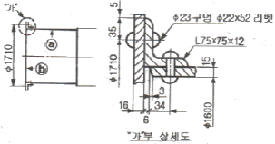
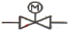
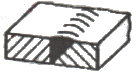
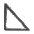
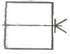

특수용접기능사 (2014-07-20 기출문제)
1과목: 용접일반
1. 아크 용접에서 피복제의 작용을 설명한 것 중 틀린 것은?
- 전기절연 작용을 한다.
- 아크(arc)를 안정하게 한다.
- 스패터링(spattering)을 많게 한다.
- 용착금속의 탈산정련 작용을 한다.
(정답률: 91%)

2. 강의 인성을 증가시키며, 특히 노치 인성을 증가시켜 강의 고온 가공을 쉽게 할 수 있도록 하는 원소는?
- P
- Si
- Pb
- Mn
(정답률: 52%)
3. 플라즈마 아크 절단법에 관한 설명이 틀린 것은?
- 알루미늄 등의 경금속에는 작동가스로 아르곤과 수소의 혼합가스가 사용된다.
- 가스절단과 같은 화학반응은 이용하지 않고, 고속의 플라즈마를 사용한다.
- 텅스텐전극과 수냉 노즐사이에 아크를 발생시키는 것을 비이행형 절단법이라 한다.
- 기체의 원자가 저온에서 음(-)이론으로 분리된 것을 플라즈마라 한다.
(정답률: 59%)
4. AW 220, 무부하 전압 80V, 아크전압이 30 V인 용접기의 효율은(단, 내부손실은 2.5kW이다.)
- 71.5%
- 72.5 %
- 73.5%
- 74.5%
(정답률: 59%)
5. 예열용 연소 가스로는 주소 수소가스를 이용하며, 침몰선의 해체, 교량의 교각 개조 등에 사용되는 절단법은?
- 스카핑
- 산소창 절단
- 분말절단
- 수중절단
(정답률: 91%)
6. 피복아크 용접봉의 보관과 건조 방법으로 틀린 것은?
- 건조하고 진동이 없는 곳에 보관한다.
- 저소수계는 100 ~ 150℃에서 30분 건조한다.
- 피복제의 계통에 따라 건조 조건이 다르다.
- 일미나이트계는 70 ~ 100℃에서 30 ~ 60분 건조한다.
(정답률: 78%)
7. 가스절단 작업을 할 때 양호한 절단면을 얻기 위하여 예열 후 절단을 실시하는데 예열불꽃이 강할 경우 미치는 영향 중 잘못 표현된 것은?
- 절단면이 거칠어진다.
- 절단면이 매우 양호하다.
- 모서리가 용융되어 둥글게 된다.
- 슬래그 중의 철 성분의 박리가 어려워진다.
(정답률: 76%)
8. 아크 용접기에 사용하는 변압기는 어느 것이 가장 적합한가?
- 누설 변압기
- 단권 변압기
- 계기용 변압기
- 전압 조정용 변압기
(정답률: 51%)
9. 가스용접에서 전진법과 비교한 후진법의 설명으로 맞는 것은?
- 열이용률이 나쁘다.
- 용접속도가 느리다.
- 용접변형이 크다.
- 두꺼운 판의 용접에 적합하다.
(정답률: 74%)
10. 산소에 대한 설명으로 틀린 것은?
- 가연성 가스이다.
- 무색, 무취, 무미이다.
- 물의 전기분해로도 제조한다.
- 액체 산소는 보통 연한 청색을 띤다.
(정답률: 78%)
11. 피복 아크 용접 시 용접회로의 구성순서가 바르게 연결된 것은?
- 용접기 → 접지케이블 → 용접봉홀더 → 용접봉 → 아크 → 모재 → 헬멧
- 용접기 → 전극케이블 → 용접봉홀더 → 용접봉 → 아크 → 접지케이블 → 모재
- 용접기 → 접지케이블 → 용접봉홀더 → 용접봉 → 아크 → 전극케이블 → 모재
- 용접기 → 전극케이블 → 용접봉홀더 → 용접봉 → 아크 → 모재 → 접지케이블
(정답률: 64%)
12. 엔진 구동형 용접기에 비해 정류기형 직류 아크 용접기의 특성에 관한 설명으로 틀린 것은?
- 보수와 점검이 어렵다.
- 취급이 간단하고 가격이 싸다.
- 고장이 적고, 소음이 나지 않는다.
- 교류를 정류하므로 완전한 직류를 얻지 못한다.
(정답률: 54%)
13. 동일한 용접조건에서 피복 아크 용접할 경우 용입이 가장 깊게 나타나는 것은?
- 교류(AC)
- 직류 역극성(DCRP)
- 직류 정극성(DCSP)
- 고주파 교류(ACHF)
(정답률: 78%)
14. 탄소강의 종류 중 탄소 함유량이 0.3 ~ 0.5%이고 탄소량이 증가함에 따라서 용접부에서 저온 균열이 발생될 위험성이 커지기 때문에 150 ~ 250℃로 예열을 실시할 필요가 있는 탄소강은?
- 저탄소강
- 중탄소강
- 고탄소강
- 대탄소강
(정답률: 53%)
15. 가스 용접봉의 성분 중에서 인(P)이 모재에 미치는 영향을 올바르게 설명한 것은?
- 기공을 막을 수 있으나 강도가 떨어지게 된다.
- 강의 강도를 증가시키나 연신율, 굽힘성 등이 감소된다.
- 용접부의 저항력을 감소시키고, 기공 발생의 원인이 된다.
- 강에 취성을 주며 가연성을 잃게 하는데 특히 암적색으로 가열한 경우는 대단히 심하다.
(정답률: 45%)
16. 아크전류가 일정할 때 아크전압이 높아지면 용접봉의 용융속도가 늦어지고, 아크전압이 낮아지면 용융속도가 빨라지는 특성은?
- 부저항 특성
- 전압회복 특성
- 절연회복 특성
- 아크길이 자기제어 특성
(정답률: 73%)
17. 일반적으로 피복 아크 용접시 운봉폭은 심선 지름의 몇 배인가?
- 1 ~ 2 배
- 2 ~ 3 배
- 5 ~ 6 배
- 7 ~ 8 배
(정답률: 85%)
18. 시중에서 시판되는 구리 제품의 종류가 아닌 것은?
- 전기동
- 산화동
- 정련동
- 무산소동
(정답률: 53%)
19. 암모니안(NH3) 가스 중에서 500℃ 정도로 장시간 가열하여 강제품의 표면을 경화시키는 열처리는?
- 침탄 처리
- 질화 처리
- 화염 경화처리
- 고주파 경화처리
(정답률: 45%)
20. 냉간가공을 받은 금속의 재결정에 대한 일반적인 설명으로 틀린 것은?
- 가공도가 낮을수록 재결정 온도는 낮아진다.
- 가공시간이 길수록 재결정 온도는 낮아진다.
- 철의 재결정온도는 330 ~ 450℃ 정도 이다.
- 재결정 입자의 크기는 가공도가 낮을수록 커진다.
(정답률: 40%)
21. 황동의 화학적 성질에 해당되지 않는 것은?
- 질량 효과
- 자연 균열
- 탈아연 부식
- 고온 탈아연
(정답률: 51%)
22. 18%Cr - 8%Ni계 스테인리스강의 조직은?
- 페라이트계
- 마텐자이트계
- 오스테나이트계
- 시멘타이트계
(정답률: 80%)
23. 주강제품에는 기포, 기고 등이 생기기 쉬우므로 제강작업시에 쓰이는 탈산제는?
- P, S
- Fe-Mn
- SO2
- Fe2O3
(정답률: 68%)
24. Fe-C 상태도에서 아공석강의 탄소함량으로 옳은 것은?
- 0.025 ~ 0.80%C
- 0.80 ~ 2.0%C
- 2.0 ~ 4.3%C
- 4.3 ~ 6.67%C
(정답률: 55%)
25. 저온 메짐을 일으키는 원소는?
- 인(P)
- 황(S)
- 망간(Mn)
- 니켈(Ni)
(정답률: 58%)
26. 오스테나이트계 스테인리스강을 용접시 냉각과정에서 고온균열이 발생하게 되는 원인으로 틀린 것은?
- 아크의 길이가 너무 길 때
- 모재가 오염되어 있을 때
- 크레이터 처리를 하였을 때
- 구속력이 가해진 상태에서 용접할 때
(정답률: 63%)
27. 텅스텐(W)의 용융점은 약 몇 ℃ 인가?
- 1538℃
- 2610℃
- 3410℃
- 4310℃
(정답률: 72%)
28. 저온뜨임의 목적이 아닌 것은?
- 치수의 경년변화 방지
- 담금질 응력 제거
- 내마모성의 향상
- 기공의 방지
(정답률: 49%)
29. 현미경 시험용 부식제 중 알루미늄 및 그 합금용에 사용되는 것은?
- 초산 알코올 용액
- 피크린산 용액
- 왕수
- 수산화나트륨 용액
(정답률: 58%)
30. 전기에 감전되었을 때 체내에 흐르는 전류가 몇 mA일 때 근육 수축이 일어나는가?(오류 신고가 접수된 문제입니다. 반드시 정답과 해설을 확인하시기 바랍니다.)
- 5 mA
- 20 mA
- 50 mA
- 100 mA
(정답률: 71%)
31. 금속산화물이 알루미늄에 의하여 산소를 빼앗기는 반응에 의해 생성되는 열을 이용하여 금속을 접합하는 용접 방법은?
- 일렉트로 슬래그 용접
- 테르밋 용접
- 불활성 가스 금속 아크 용접
- 스폿 용접
(정답률: 75%)
32. 맛대기 용접에서 판 두께가 대략 6mm 이하의 경우에 사용되는 홈의 형상은?
- I형
- X형
- U형
- H형
(정답률: 82%)
33. TIG 용접에서 청정작용이 가장 잘 발생하는 용접전원은?
- 직류 역극성일 때
- 직류 정극성일 때
- 교류 정극성일 때
- 극성에 관계없음
(정답률: 57%)
34. 다음 중 서브머지드 아크 용접에서 기공의 발생 원인과 거리가 가장 먼 것은?
- 용제의 건조불량
- 용접속도의 과대
- 용접부의 구속이 심할 때
- 용제 중에 불순물의 혼입
(정답률: 69%)
35. 안전모의 일반구조에 대한 설명으로 틀린 것은?
- 안전모는 모체, 착장체 및 턱끈을 가질 것
- 착장체의 구조는 착용자의 머리부위에 균등한 힘이 분배되도록 할 것
- 안전모의 내부수직거리는 25mm 이상 50mm 미만일 것
- 착장체의 머리 고정대는 착용자의 머리 부위에 고정하도록 조절할 수 없을 것
(정답률: 89%)
2과목: 용접재료
36. 매크로 조직 시험에서 철강재의 부식에 사용되지 않는 것은?
- 염산 1 : 물 1의 액
- 염산 3.8 : 황산 1.2 : 물 5.0의 액
- 소금 1 : 물 1.5의 액
- 초산 1 : 물 3의 액
(정답률: 67%)
37. 서브머지드 아크 용접의 용제에서 광물성 원료를 고온(1300℃ 이상)으로 용융한 후 분쇄하여 적합한 입도로 만드는 용제는?
- 용융형 용제
- 소결형 용제
- 첨가형 용제
- 혼성형 용제
(정답률: 70%)
38. 용접결함과 그 원인을 조합한 것으로 틀린 것은?
- 선상조직 - 용착금속의 냉각속도가 빠를 때
- 오버랩 - 전류가 너무 낮을 때
- 용입불량 - 전류가 너무 높을 때
- 슬래그 섞임 - 전층의 슬래그 제거가 불완전할 때
(정답률: 70%)
39. 용접작업을 할 때 발생한 변형을 가열하여 소성변형을 시켜서 교정하는 방법으로 틀린 것은?
- 박판에 대한 점수축법
- 형재에 대한 직선수축법
- 가열 후 해머질 하는법
- 피닝법
(정답률: 64%)
40. 다음 중 CO2 가스 아크용접에 적용되는 금속으로 맞는 것은?
- 알루미늄
- 황동
- 연강
- 마그네슘
(정답률: 67%)
41. 모재의 열 변형이 거의 없으며, 이종 금속의 용접이 가능하고 정밀한 용접을 할 수 있으며, 비접촉식 방식으로 모재에 손상을 주지 않는 용접은?
- 레이저 용접
- 테르밋 용접
- 스터드 용접
- 플라즈마 제트 아크 용접
(정답률: 74%)
42. 납땜에 관한 설명 중 맞는 것은?
- 경납땜은 주로 납과 주석의 합금용제를 많이 사용한다.
- 연납땜은 450℃ 이상에서 하는 작업이다.
- 납땜은 금속 사이에 융점이 낮은 별개의 금속을 용융 첨가하여 접합한다.
- 은납은 주성분은 은, 납, 탄소 등의 합금이다.
(정답률: 51%)
43. 용접부의 비파괴 시험에 속하는 것은?
- 인장시험
- 화학분석시험
- 침투시험
- 용접균열시험
(정답률: 71%)
44. 용접 시 발생되는 아크 광선에 대한 재해 원인이 아닌 것은?
- 차광도가 낮은 차광 유리를 사용했을 때
- 사이드에 아크 빛이 들어 왔을 때
- 아크 빛을 직접 눈으로 보았을 때
- 차광도가 높은 차광 유리를 사용했을 때
(정답률: 86%)
45. 용접전의 일반적인 준비 사항이 아닌 것은?
- 용접재료 확인
- 용접사 선정
- 용접봉의 선택
- 후열과 풀림
(정답률: 84%)
46. TIG 용접에서 보호 가스로 주로 사용하는 가스는?
- Ar, He
- CO, Ar
- He, CO2
- CO, He
(정답률: 82%)
47. 이산화탄소 아크 용접의 시공법에 대한 설명으로 맞는 것은?
- 와이어의 돌출길이가 길수록 비드가 아름답다.
- 와이어의 용용속도는 아크전류에 정비례하여 증가한다.
- 와이어의 돌출길이가 길수록 늦게 용융된다.
- 와이어의 돌출길이가 길수록 아크가 안정된다.
(정답률: 76%)
48. 서브머지드 아크 용접에서 루트 간격이 0.8mm 보다 넓을 때 누설방지 비드를 배치하는 가장 큰 이유로 맞는 것은?
- 기공을 방지하기 위하여
- 크랙을 방지하기 위하여
- 용접변형을 방지하기 위하여
- 용락을 방지하기 위하여
(정답률: 67%)
49. MIG 용접 시 와이어 송급 방식의 종류가 아닌 것은?
- 풀 방식
- 푸시 방식
- 푸시 풀 방식
- 푸시 언더 방식
(정답률: 86%)
50. 다음 중 심 용접의 종류가 아닌 것은?
- 맞대기 심 용접
- 슬롯 심 용접
- 매시 심 용접
- 포일 심 용접
(정답률: 51%)
3과목: 기계제도
51. 다음 중 기계제도 분야에서 가장 많이 사용되며, 제3각법에 의하여 그리므로 모양을 엄밀, 정확하게 표시할 수 있는 도면은?
- 캐비닛도
- 등각투상도
- 투시도
- 정투상도
(정답률: 79%)
52. 그림과 같은 도면에서 ⓐ 판의 두께는 얼마인가?

- 6 mm
- 12 mm
- 15 mm
- 16 mm
(정답률: 54%)
53. 배관 도시 기호 중 체크밸브를 나타내는 것은?

(정답률: 79%)
54. 다음 중 단독형체로 적용되는 기하공차로만 짝지어진 것은?
- 평면도, 진원도
- 진직도, 직각도
- 평행도, 경사도
- 위치도, 대칭도
(정답률: 51%)
55. 기계제도에서 도면의 크기 및 양식에 대한 설명 중 틀린 것은?
- 도면 용지는 A열 사이즈를 사용할 수 있으며, 연장하는 경우에는 연장사이즈를 사용한다.
- A4 ~ A0 도면 용지는 반드시 긴 쪽을 좌우 방향으로 놓고서 사용해야 한다.
- 도면에서 반드시 윤곽선 및 중심마크를 그린다.
- 복사한 도면을 접을 때 그 크기는 원칙적으로 A4 크기로 한다.
(정답률: 60%)
56. 물체의 정면도를 기준으로 하여 뒤쪽에서 본 투상도는?
- 정면도
- 평면도
- 저면도
- 배면도
(정답률: 79%)
57. 그림과 같은 용접 이음을 용접 기호로 옳게 표시한 것은?


(정답률: 85%)
58. 다음 중 치수 보조 기호를 적용할 수 없는 것은?
- 구의 지름 치수
- 단면이 정사각형인 면
- 단면이 정삼각형인 면
- 판재의 두께 치수
(정답률: 61%)
59. 다음 중 용접 구조용 압연 강재의 KS 기호는?
- SS 400
- SCW 450
- SM 400 C
- SCM 415 M
(정답률: 67%)
60. 다음 그림에서 축 끝에 도시된 센터 구멍 기호가 뜻하는 것은?

- 센터 구멍이 남아 있어도 좋다.
- 센터 구멍이 필요하지 않다.
- 센터 구멍을 반드시 남겨둔다.
- 센터 구멍이 필요하다.
(정답률: 49%)